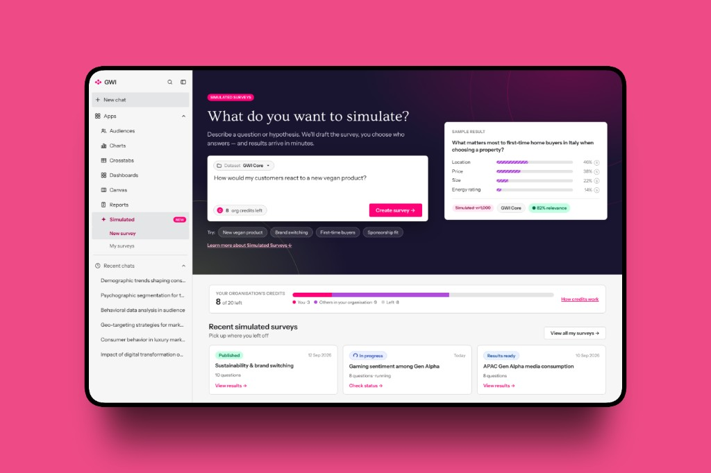
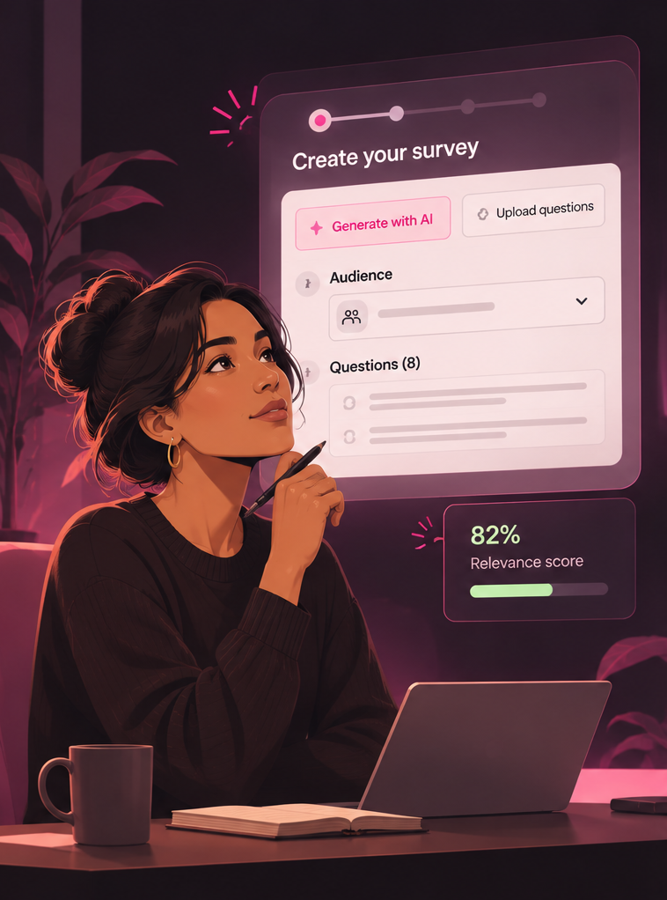
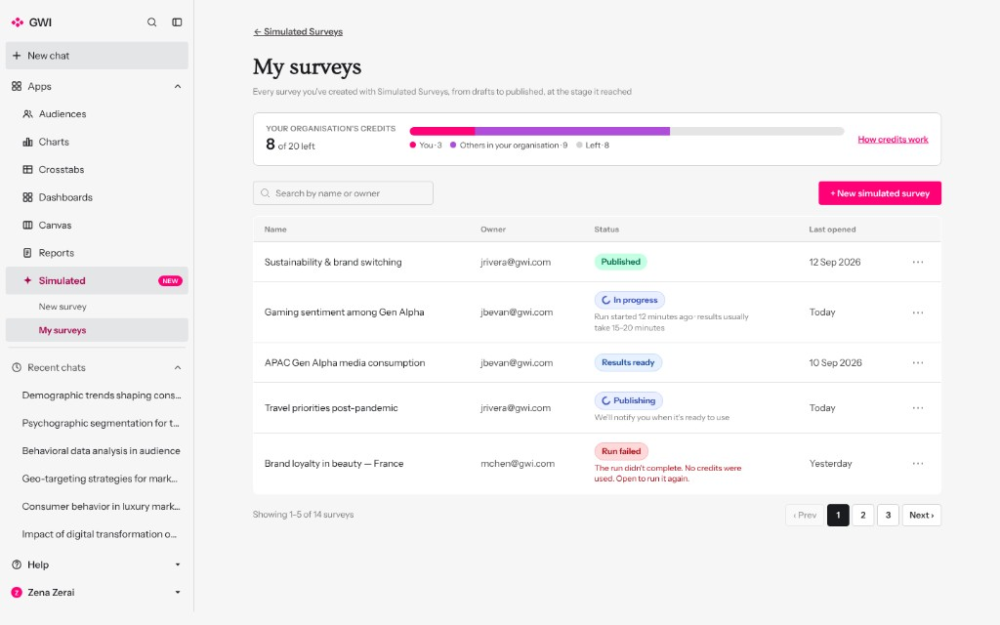
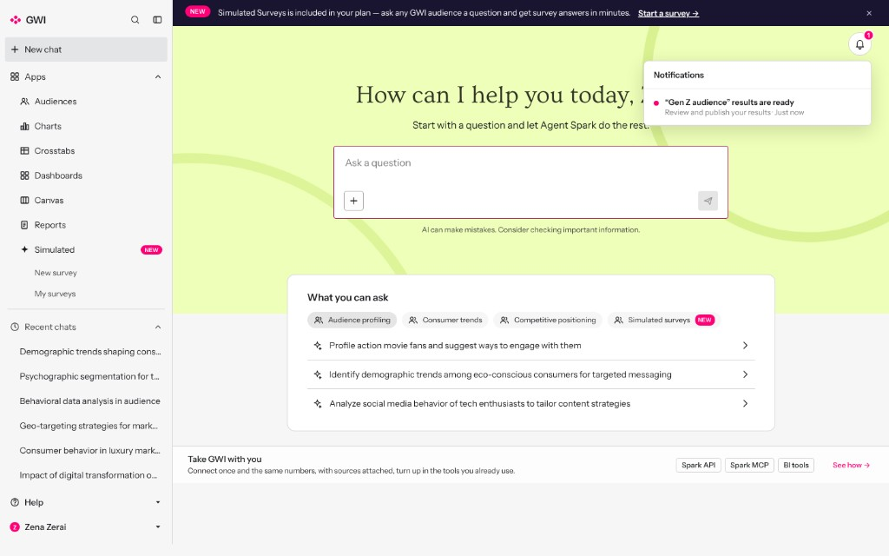
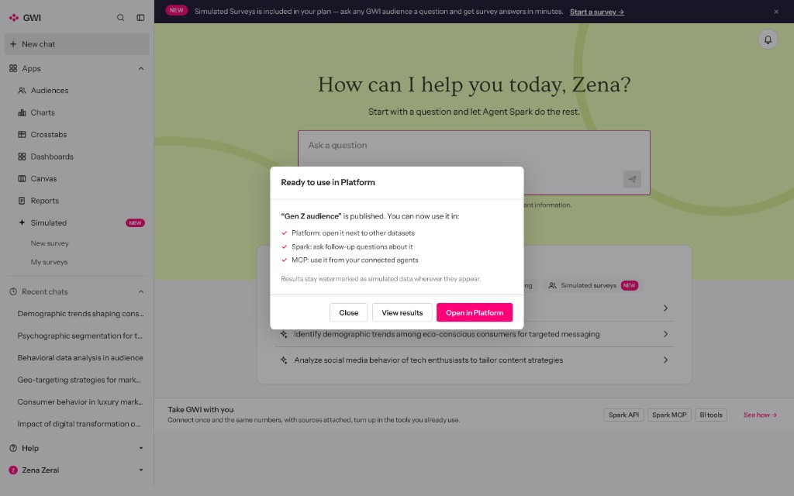
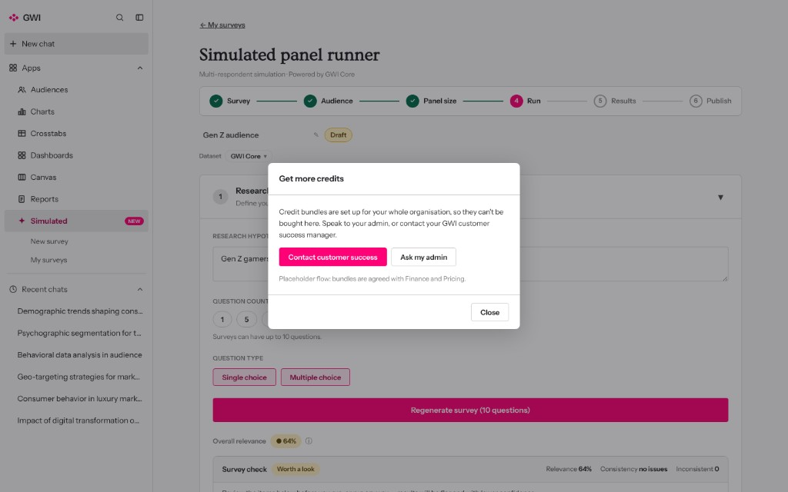
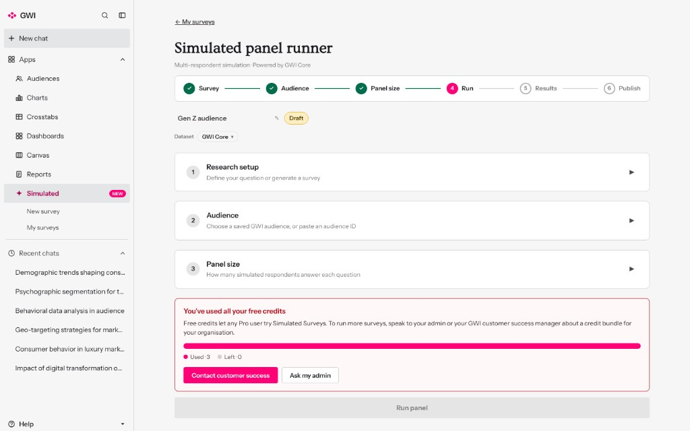

Designing self-serve AI-simulated research
GWI is exploring a move towards self-serve AI-simulated research, enabling customers to create surveys using respondents modelled on GWI’s consumer data.
The challenge is balancing a straightforward research experience with the consumption-based model behind it — from understanding results to managing credits, access and usage.

Different users, different needs
Needs being explored

Researcher / survey creator
- Create useful surveys independently
- Configure audiences and questions
- Understand and interpret results
Organisation / account administrator
- Understand consumption and usage
- Allocate credits across users
- Manage access and sharing
The challenge is making research creation feel effortless while giving organisations the visibility and control they need over a consumption-based product.
Understanding the underlying product
User Management × Data × Engineering
Working across User Management and Data, I’m connecting both sides of the product: understanding what customers need from an AI research experience, and what’s needed to make self-serve work within GWI’s wider platform and commercial model.
Understanding the AI
Working with Data and engineering to understand the model’s capabilities and limitations, and what those mean for survey creation and interpreting results.
Making self-serve work
Building on existing User Management discovery and working with engineers across both teams to explore usage caps, credit allocation and access controls.
This builds on earlier API/MCP usage dashboard work. Once the commercial model and requirements are agreed, there may be an opportunity to extend that experience for visibility of simulated survey consumption.
Design explorations
Prototype
-
01
Survey management

Exploring how to make survey setup clear and manageable.
-
02
Results and notifications


Exploring how to make simulated results understandable and useful.
-
03
Credits and consumption messaging


Credits and consumption messaging exploration.
Prototype walkthrough
A working prototype exploring the journey from panels and survey setup through to results.
What happens next
Planned next steps
-
01
Align on the commercial model
Work with the business to understand how simulated survey consumption will work. Will usage be tied to existing product consumption or billed separately?
-
02
Work through the platform implications
Collaborate with engineers across User Management and Data to explore what the agreed model means for usage caps, credit allocation across users and access controls.
-
03
Validate with customers
Test the proposed experience with enterprise clients through GWI’s innovation partners programme, exploring survey creation, interpretation of simulated results, and expectations around consumption, sharing and cost visibility.
Validation focus
Customer testing will help us understand whether people can create suitable surveys independently, interpret simulated results appropriately, and understand how consumption and access should work.